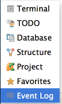

You can gain quick access to the available tool windows: hover your mouse pointer over icon in the lower left corner of the IDE window.
The list of tool windows shows up, leaving you with the task of selecting the desired one:
